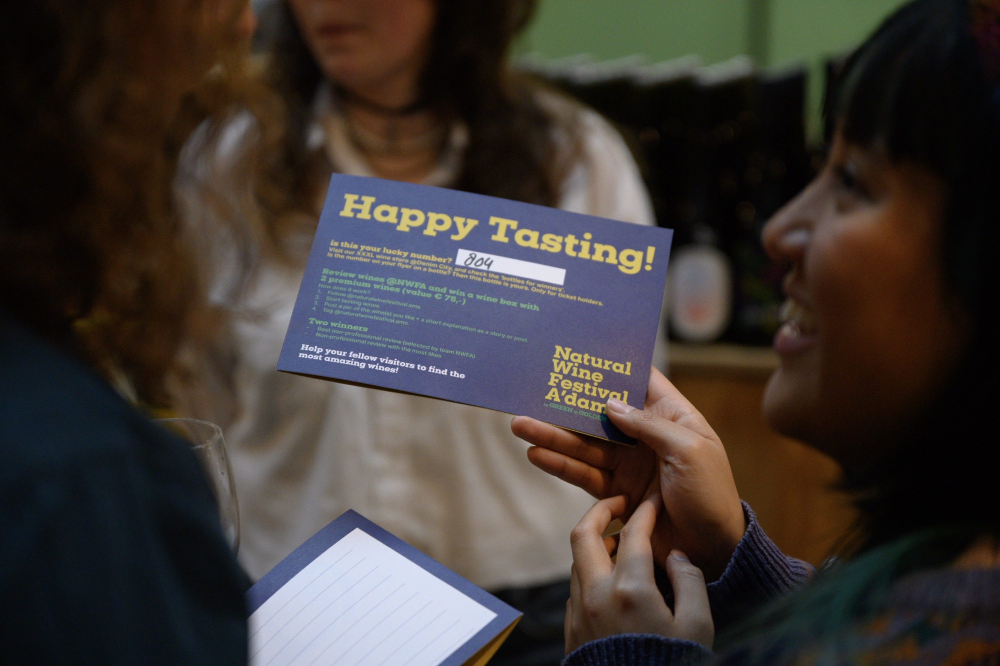
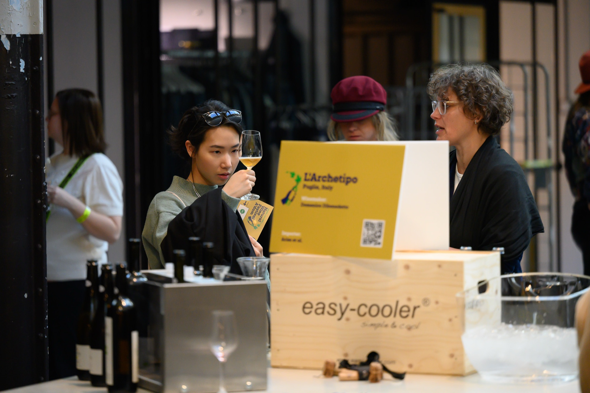
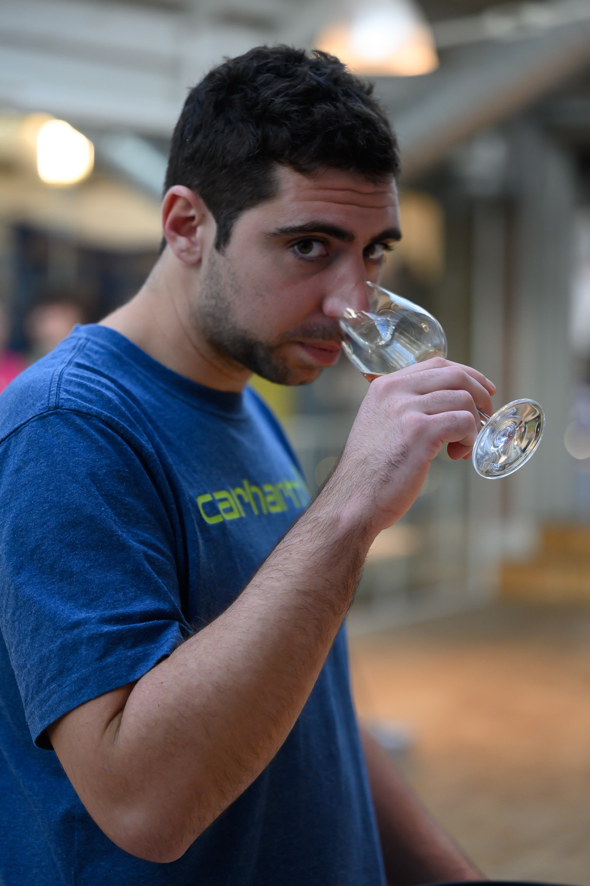
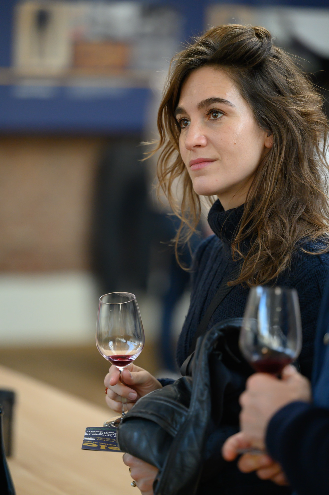

learn from the source — masterclasses, tastings, and one quiet meditation. led by the winemakers themselves and a handful of trusted guides.




booked after you buy your festival ticket, one per pass. changing possible until 28 february, 11.00.